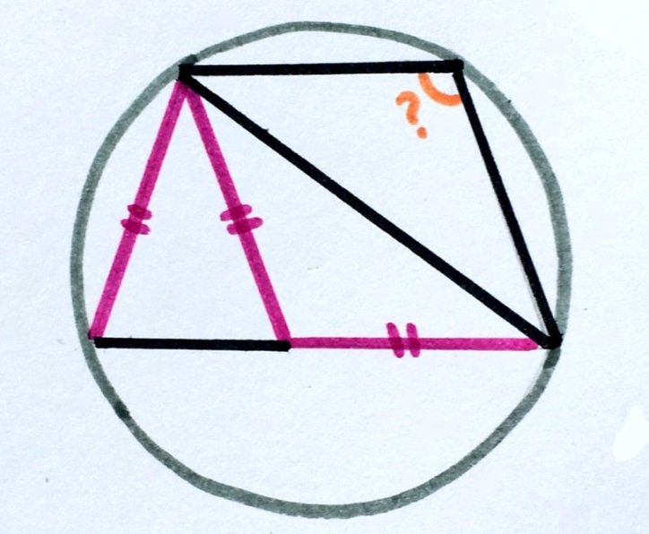

Usually when you see math problems like these, your answer is no, I am not doing that, a very reasonable answer,
but for crazy people, like me, we try to do some scratch work on a napkin and solve the math problem. I found this
math problem the other day, and it has been driving me crazy because my work showed me that the problem was flawed
and that it had no sollution. It turned out there was a sollution.
The four triangles are isosceles. Find the measurement of the orange angle.
Proof that this is not a flawed problem:
It is given that the four visible triangles are isosceles.
Let the far bottom leftmost angle equal x degrees
The base angles therom says that the bace angles of an isosceles triangle are congruent. This means that the angle to the right of the origional x degree angle is also x degrees
There is a theorum that states in a quadrilateral inscribed in a circle, the oposite angles are supplimentary, so the mystery angle is 180-x degrees
The angle supplimentry to the x in the middle bottom of the figure is 180-x degrees.
since these numbers are equal, the angles are congruent.
Since the far right triangle is isosceles, the quadrilateral sketched makes a kite or a rhombus, and kites and rhombi have congrent opposite angles where the pairs of ajacent congruent sides intersect.
Since both oposite angles in the quadritatral are congruent to each other, the figure is a parelleligram, and since kites are not parelleligrams the figure is a rhombus.
According to the bace angles theorum, the uper left angle comprised of two angles equals x degrees.
This means the far lower right angle is 180-2x degrees and the left mos angle that the prevoius angle was comprised of is also 180-2x degrees.
According to the bace angles theorum that lower right triangle is also x/2 degrees ((180-(180-x))/2) if x/2=180-2x then x=72
x would equal 72 and the mystery angle would be 108 degrees